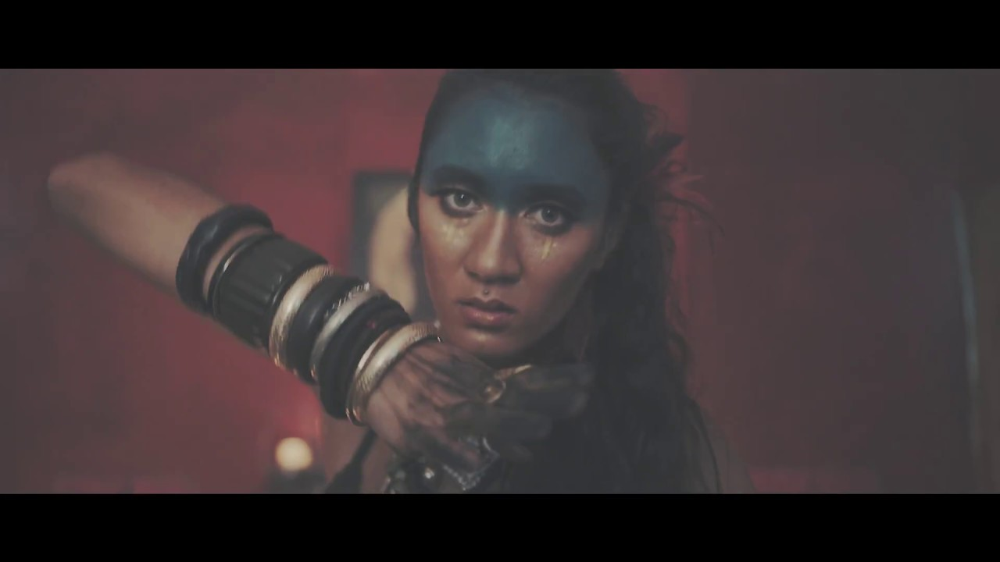
Highways
Cylo ft Blue Moon
Senior multimedia producer
& filmmaker / Melbourne
Film, music videos
and stories worth hearing.
01 / The work comes first
I’m a producer and filmmaker working across moving image and sound. My experience spans independent music videos, camera departments in Vancouver, teaching creative technology at Wyndham Tech School, and leading multimedia production at Victoria University.
Based in Melbourne. Trained in film and television at Deakin, and motion control at MRMC in London.
02 / Selected productions
Seven music videos.
Eight commercial, university & event films.

Cylo ft Blue Moon
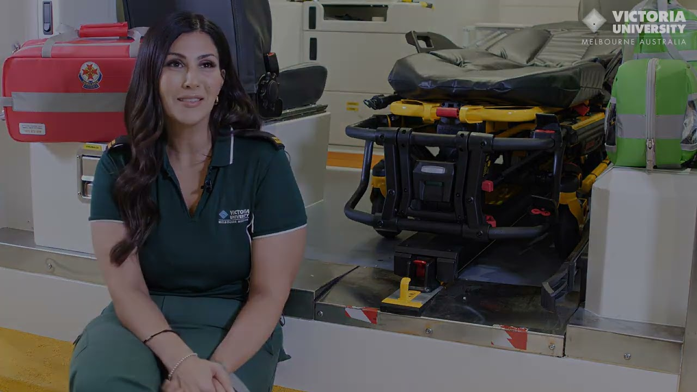
Victoria University
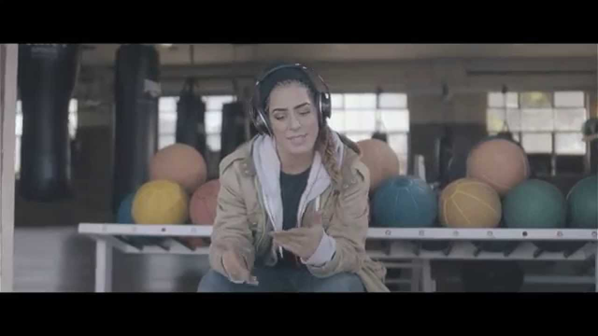
YVE GOLD ft Julian Ak
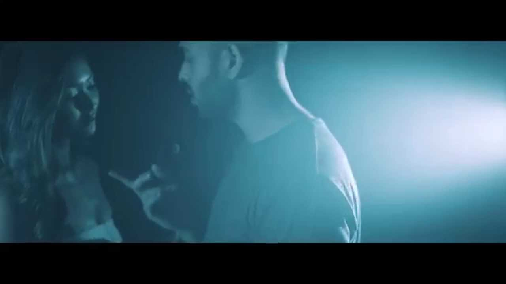
Julian A.K
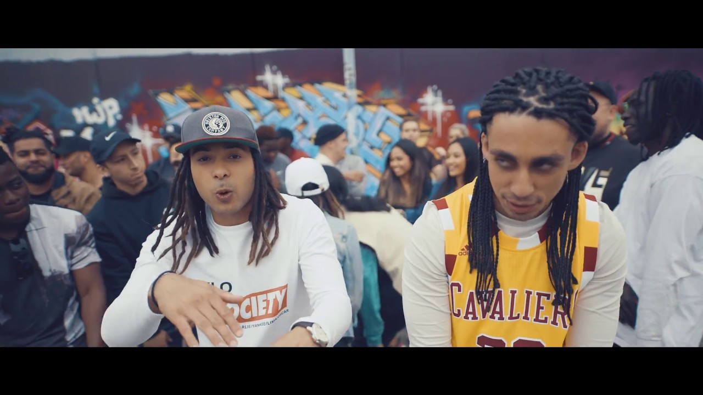
Cylo
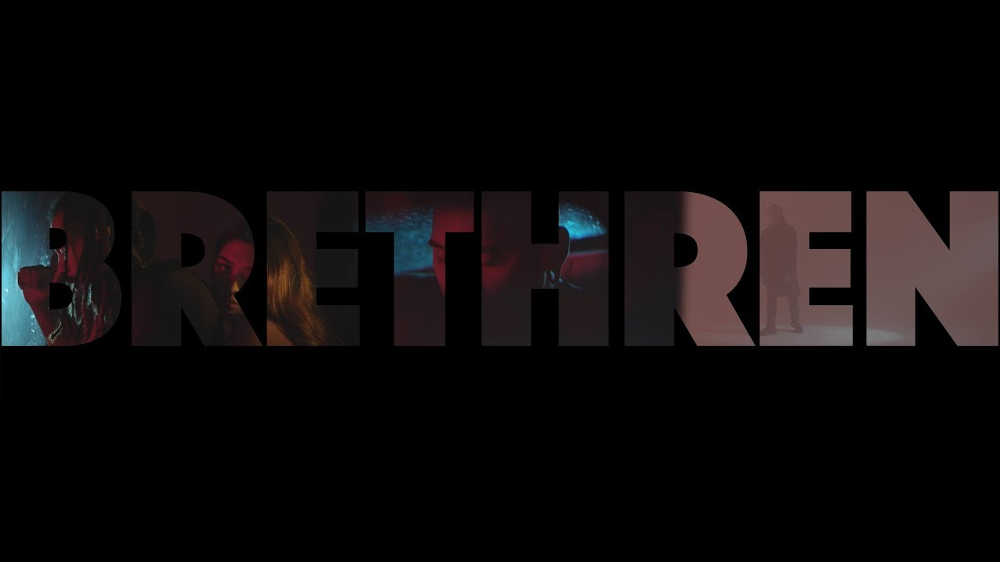
Cylo ft NRVS
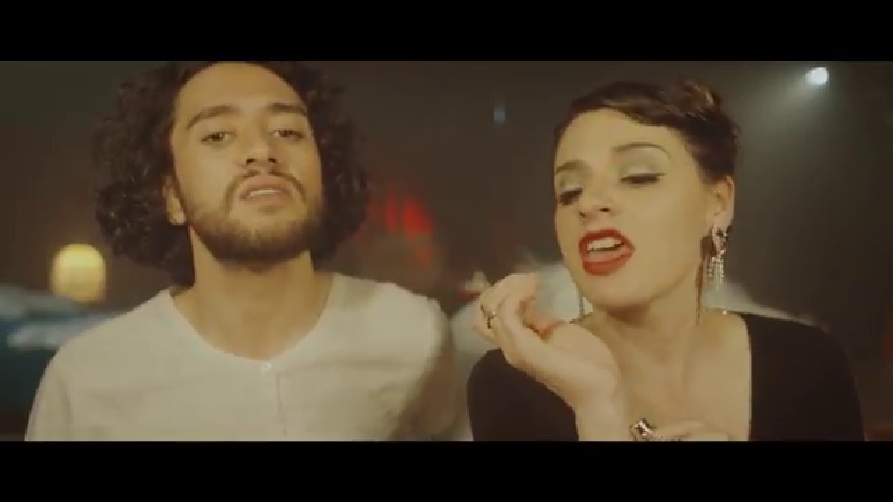
Able8 ft Arowe & Che Steer
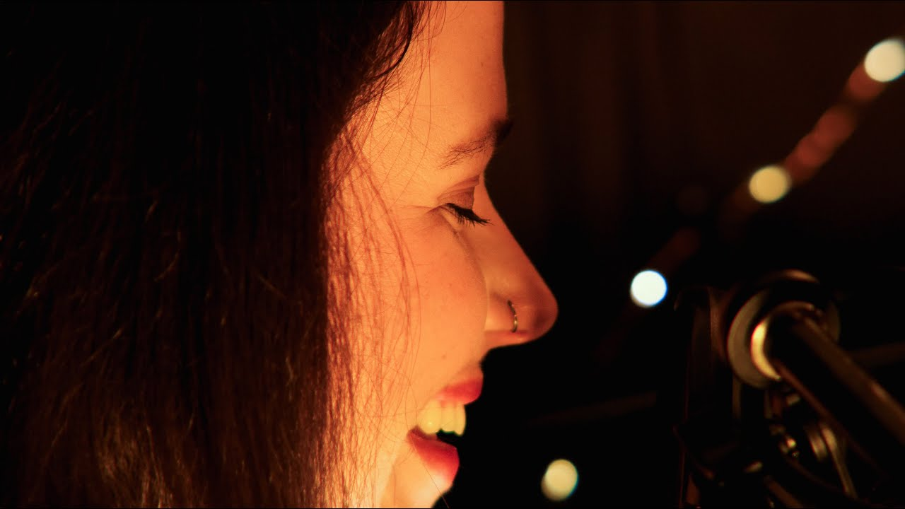
Maddie Jackway
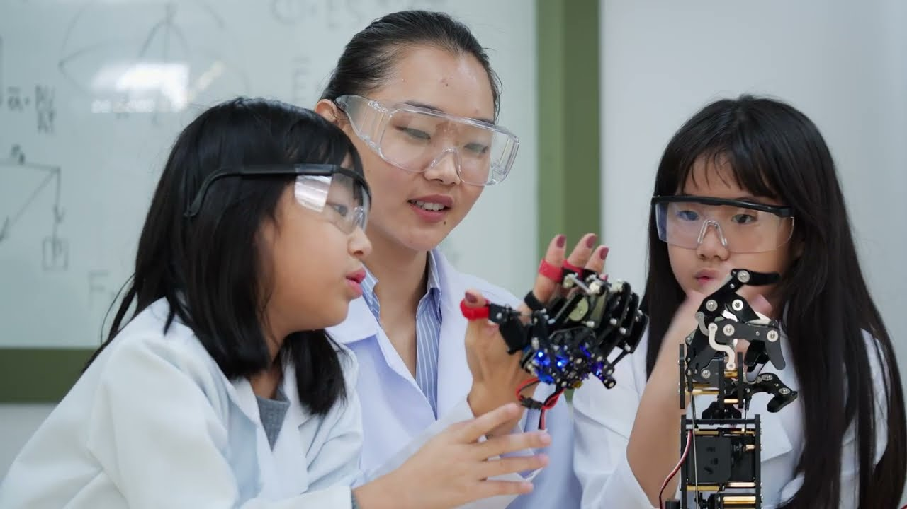
Department of Education
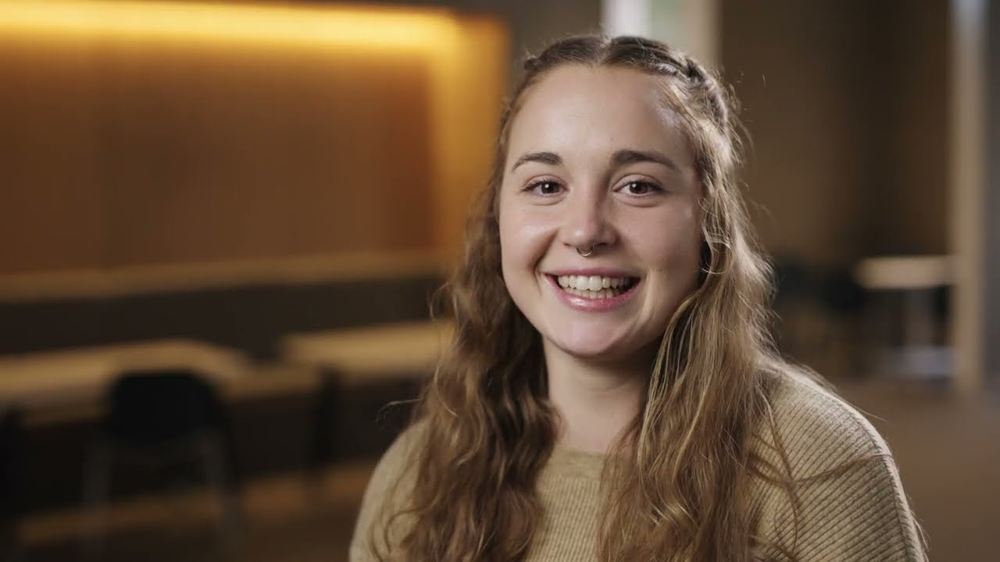
Victoria University
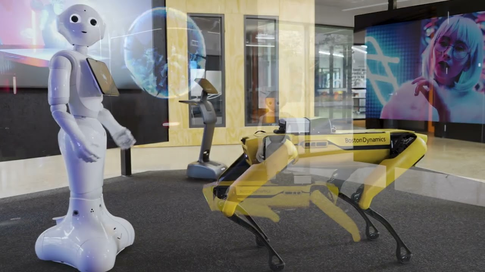
Wyndham Tech School
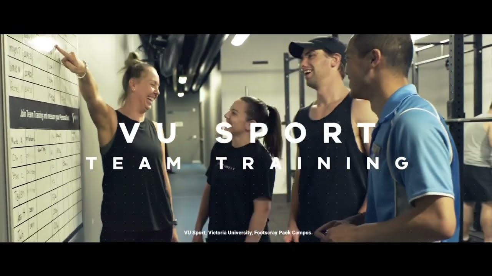
Victoria University
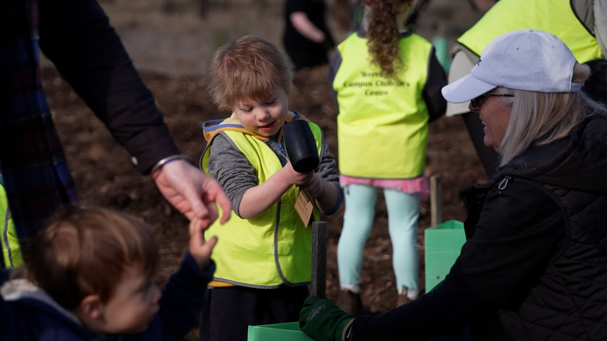
Victoria University
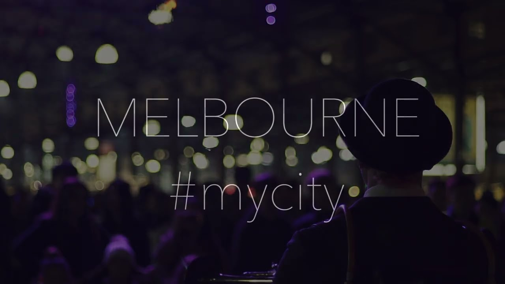
Melbourne
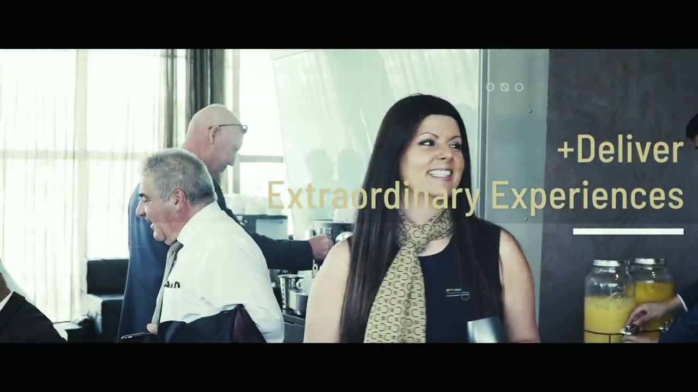
Event production
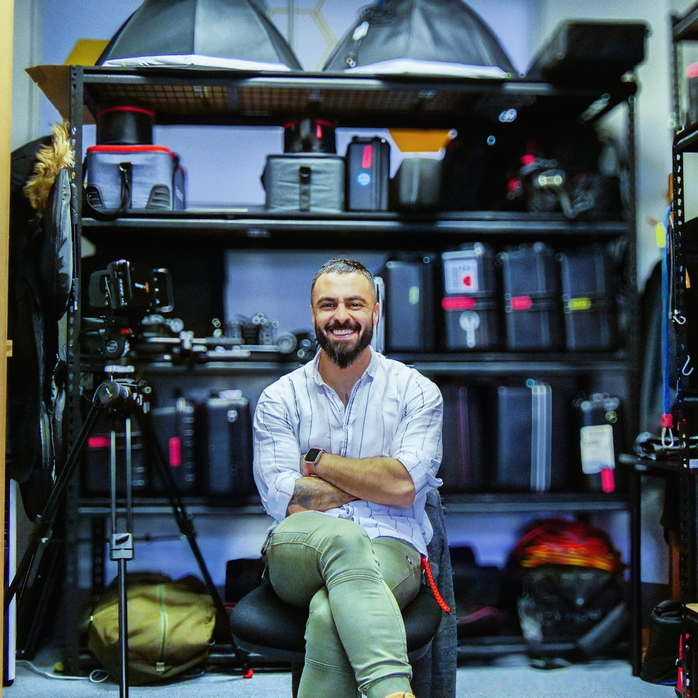
Behind the scenes / Leo Houssami
03 / Production practice
A practical understanding of the whole process—from a creative brief and a working set to a finished film or podcast.
Music videos, location production, camera department work and real estate films. MRMC motion-control training on Bolt and Bolt Jr.
Video editing and motion graphics with Adobe Creative Cloud and After Effects. Captions, transcripts and finishing for web, learning and institutional audiences.
Audio and video podcast production, including People of VU series with Vice-Chancellor Adam Shoemaker.
In focus / Victoria University
As Senior Multimedia Producer, I led three producers and editors delivering learning, research and community content across university campuses.
University stories, research communications, sport and community productions, including work with the Moondani Balluk Indigenous Academic Unit.
Production and publication of People of VU, alongside audio, video and multimedia learning assets.
Listen to People of VU ↗Captions, transcripts, graphics and publishing workflows. Consistent delivery across multiple teams, campuses and audiences.
In focus / Wyndham Tech School
As a STEM Educator at Wyndham Tech School, I brought production skills into the classroom, teaching students to create games, podcasts and films through hands-on workshops.
Taught video game design in Unreal Engine, helping students explore interactive storytelling and develop their ideas through creative technology.
Delivered Podcasting 101 and visual storytelling workshops, guiding students in shaping ideas and communicating them through audio and moving image.
Taught cinematography, filmmaking and drone flying. Designed digital learning modules and delivered workshops aligned with curriculum goals.
04 / About Leo
My path into production has taken me from freelance music videos in Melbourne to motion-control training in London and camera departments in Vancouver.
I graduated from Deakin University with a Bachelor of Film and Television in 2017. In 2018, I trained with Mark Roberts Motion Control in London on Bolt and Bolt Jr. In 2019, I worked as a camera trainee on commercials, films and television productions in Vancouver, including productions for Netflix and Amazon.
Back in Melbourne, I taught creative technology as a STEM Educator at Wyndham Tech School before moving into senior multimedia production at Victoria University. My work connects camera craft, editing, audio and the collaborative discipline of getting a production finished.
Melbourne-based · English & Arabic
View production résumé ↗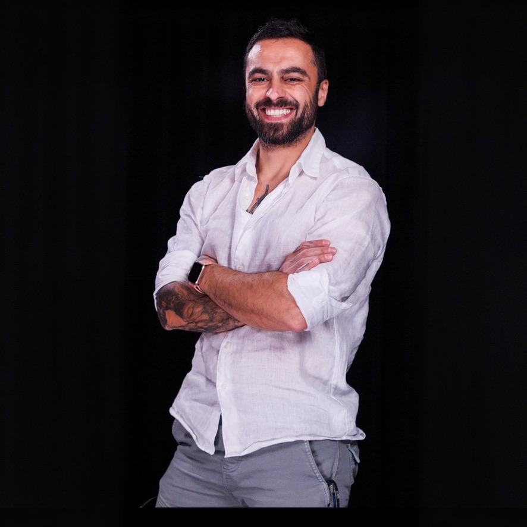
05 / Selected production experience
2023 — May 2025
Victoria University
Led three producers and editors across university production. Created learning, research and community films; produced People of VU podcast; managed accessible publishing workflows.
Jan 2021 — Mar 2023
Wyndham Tech School
Taught video game design in Unreal Engine, Podcasting 101, cinematography, drone flying, storytelling and filmmaking. Designed digital learning modules and delivered practical workshops aligned with curriculum goals.
2019
Vancouver, Canada
Worked in camera departments on television commercials, films and television shows, including productions for Netflix and Amazon.
2015 — 2019
Diakrit International
Shot and produced real estate media to tight turnaround times. Coordinated location logistics and trained colleagues in production standards.
2013 — 2018
Independent / Melbourne
Created music videos and independent moving-image work with artists. Built hands-on production experience across video and audio.
Education & specialist training
2018 / London
Mark Roberts Motion Control (MRMC)
2017 / Melbourne
Deakin University
06 / The next production
For video production, filmmaking and multimedia roles.
leohoussami@gmail.com